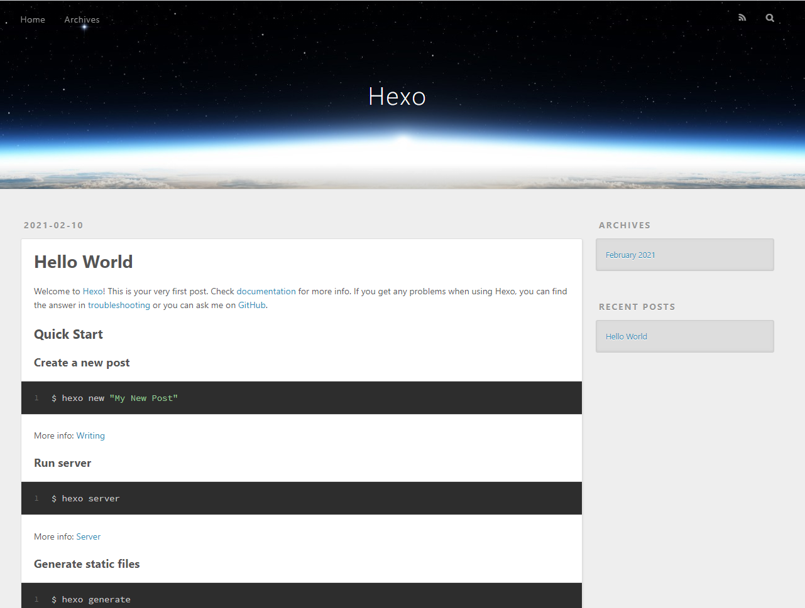

hexo博客更换主题
前言
在继续往下读这篇文章之前，你应该确保自己已经可以在本地预览Hexo的效果了，如果还不行的话，可以读一下我之前写的文章。
本文将在上一篇文章的基础上，为Hexo更换一个主题，就以Next主题为例子，同时也会讲讲安装Next主题时可能遇到的一些问题。
选一个自己喜欢的主题
安装完Hexo并第一次跑起来后，你应该会看到这样的界面。

这时Hexo的默认主题Landscape，实际上Hexo社区非常热闹，目前有很多的主题可供选择了，你可以去Hexo官网逛逛，传送门Hexo官方主题推介。
这里我就以Next主题为例吧，毕竟我自己的博客也是用Next主题的。下面给出Next主题的Github仓库，你可以看看作者的说明，传送门Next主题仓库。
下载安装主题
在之前使用hexo init命令生成项目后，你应该会发现其中有个目录名称叫themes，没错，这个目录就是用来保存当前这个项目可用的所有的hexo主题，每个主题一个单独的目录，比如下载了next主题，那么它就保存在themes/next中。
使用git clone将next主题下载到你的themes/next目录中，比如当前在项目根目录下，可以用下面的指令来下载主题。
git clone git@github.com:iissnan/hexo-theme-next.git themes/next
随后切换目录到next目录下，安装js依赖，即npm install。
切换主题
安装完主题后，并没有直接生效，需要在hexo项目根目录下的_config.yml，即全局配置文件中进行切换。
在其中找到theme项，将landscape修改为next，保存退出。
此时你就可以在本地预览next主题的效果了，切换回hexo项目根目录，使用hexo generate和hexo server就可以本地运行，可以简写为hexo g && hexo s。
启动后，访问localhost:4000，好像不对啊，怎么显示这一串玩意。
解决错误
实际上面的报错是因为hexo在5.0之后把一个渲染插件swig给删除了，需要我们自己手动安装。
在hexo项目根目录使用下列指令进行安装。
npm install hexo-renderer-swig --save
再次hexo g && hexo s，就可以看到效果了。

后文
到这里位置，hexo主题切换就完成了，但你可能还觉得不够好，因为页面默认是英文的，好像点击其中的超链接还会失效，这些都是因为没有进行详细的配置，下次来讲讲next主题的配置和hexo本身的配置，让你对博客页面进行个性定制。